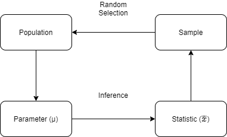
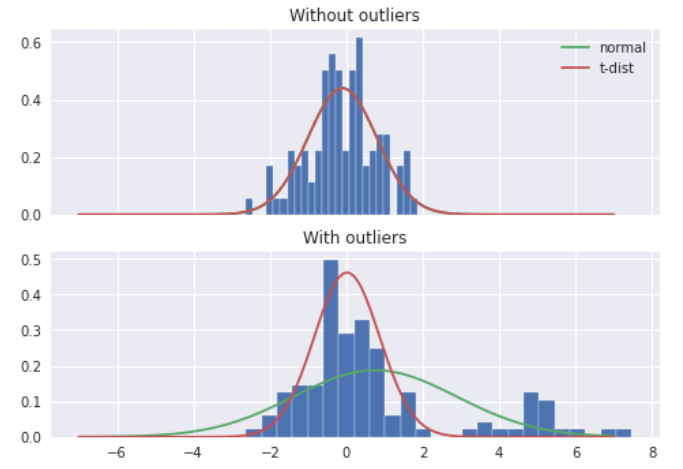

Show code cell source
import matplotlib.pyplot as plt
import numpy as np
from scipy import stats
plt.style.use("fast")
统计量与抽样#
1. 统计量#
在数据的统计分析中，往往需要利用几个选定的样本（sample），得出其所来自的总体（population）的结论。正确的研究设计应该确保样本数据能够代表总体。
总体与样本之间的主要区别在于如何将观测结果分配到数据集中。

1.1. 集中程度#
术语 |
英文 |
定义 |
适用 |
|---|---|---|---|
算数均值 |
arithmetic mean |
\(\dfrac{∑X_{i}}{n}\) |
对称或近似对称资料 |
几何均值 |
geometric mean |
\(\sqrt{n}{∏X_{i}}\) |
百分数和比例表示的资料 |
调和均值 |
harmonic mean |
\(\dfrac{1}{\dfrac{1}{n} ∑\dfrac{1}{X_{i}}}\) |
速度类或有极端值的资料 |
中数 |
median |
\(M_d\) |
偏峰分布资料 |
众数 |
mode |
\(M₀\) |
1.2. 离散程度#
1.2.1. 极差、分位数#
极差（range）：最大值 - 最小值；
分位数（percentile）：多由箱线图表示，简单概括为\(5\)线\(n\)点，由上到下依次为：
上边缘：除离群值外的最大值
上四分位数：Q1，逆序排列，第 25% 个数
中位数：Q2
下四分位数：Q3，逆序排列，第 75% 个数
下边缘：除离群值外的最小值
若分位数计算结果不是整数，则取下一个整数
四分位距（inter-quartile-range，IQR）：Q3 - Q1。< Q1 - 1.5 IQR 或 > Q1 + IQR 为离群值点；
IQR 无法将所有数据考虑进来，一般使用 \(μ ± 2*σ\)
1.2.2. 标准差、变异系数#
方差（variance）：也叫平均平方偏差（mean square deviation）
标准偏差（standard deviation）
Python 中，NumPy 默认计算总体标准差，即分母为\(n\)，而 Pandas 默认计算样本标准差
变异系数（coefficient of variation）：用于量纲不同但变量间比较。
1.3. 期望#
期望值是该变量总体输出值的均值
对离散型分布
对连续型分布
设\(a\)为常数，\(X\)和\(Y\)是两个随机变量，则有
线性：\(𝔼[X + Y] = 𝔼[X] + 𝔼[Y]\)
\(𝔼[aX + Y) = a𝔼[X + Y]\)
独立性：\(X\)、\(Y\) 相互独立 ⇒ \(𝔼[XY) = 𝔼[X]𝔼[Y]\)
1.4. 方差#
设\(X\)为随机变量，若存在
则称其为\(X\)的方差，记作\(D(X)\)
即离均差的平方的期望
对离散型分布
对连续型分布
设\(a\)为常数，\(X\)和\(Y\)是两个随机变量
\(D(X) = 𝔼[X^2] - E^2(X)\)
\(D(aX + b) = a^2D(X)\)
独立线性可加：\(X\)、\(Y\)相互独立 ⇒ \(D(X + Y) = D(X) + D(Y)\)
\(D(X ± Y) = D(X) + D(Y) ± 2Cov(X, Y)\)
1.5. 协方差#
设\(X\)、\(Y\)为随机变量，若存在
则称其为\(X\)与\(Y\)的协方差，记作\(Cov(X, Y)\)
\(Cov(X, X) = D(X)\)
参数可交换：\(Cov(X, Y) = Cov(Y, X)\)
参数线性可加：\(Cov(X_1 + X_2, Y) = Cov(X_1, Y) + Cov(X_2, Y)\)
协方差构成的矩阵为对称阵
其中，\(σ^2\)是方差，亦为残差的均方误差（MSE）。
2. 大数定律#
2.1. Chebyshev 不等式#
设随机变量 \(X\) 的 \(𝔼[X] = μ, D(X) = σ^2\)，则\(∀ϵ ∈ ℤ\)，存在
即
推论
所有数据，至少 3/4 落在位于均值 2 个标准差范围内
所有数据，至少 8/9 落在位于均值 3 个标准差范围内
所有数据，至少 15/16 落在位于均值 4 个标准差范围内
2.2. 几乎确信收敛#
当\(n → ∞\)，在函数\(P\)下，\(X_n(ω)\)不收敛到\(x₀(ω)\)的概率为 0
则称\(X_n\)几乎确信收敛\(x_0\)，记为
2.3. Kolmogorov 大数定律#
也称强大数定律（Strong Law of Large Numbers，SLLN）。
设\(X_{i} ∼ i.i.d.\)，且期望值\(𝔼[X_{i}] = μ(k = 1, 2, ⋯)\)，则
2.3. 依概率收敛#
设\(X_2, X_2, ⋯\)是随机变量序列，若\(∀ϵ\)，有
则称\(X_n\)依概率收敛于\(x_0\)，记为
2.5. Wiener-Khinchin 大数定律#
也称弱大数定律（Weak Law of Large Numbers，WLLN）。定律指出：用算术均值来近似实际真值是合理的。
设\(X_{i} ∼ i.i.d.\)，期望值\(𝔼[X_{i}] = μ(i = 1, 2, ⋯)\)，则\(∀ϵ ∈ ℤ\)，存在
当\(X_{i}\)为服从 0-1 分布，W-K 大数定律即为 Bernoulli 大数定律
3. 中心极限定理（CLT）#
3.1. 依分布收敛#
当\(X_n\)依分布收敛到\(x_0\)，即\(X_n\)的 CDF 越来越接近\(x_0\)的 CDF（随机变量的 PDF 并不总存在）。\(\{X_n\}\)和\(\{x_0\}\)是 CDF 分别为\(\{F_n(⋅)\}\)和\(\{F_0(⋅)\}\)的随机变量序列，若在\(F_0(x)\)连续处，\(∀x ∈ ℝ\)，有
则当\(n → ∞\)时，\(\{X_n\}\)依分布收敛于\(\{x_0\}\)，记为
3.2. 独立同分布定理#
\(n\)个独立同分布随机变量之和近似于高斯分布。
当抽样次数足够大（\(n ⩾ 30\)）便有以上性质，这样的总体可看做正态总体。
Show code cell source
n_data = 100000
n_bins = 50
rng = np.random.default_rng(42)
data = rng.random(n_data)
avg2 = np.mean(data.reshape((n_data // 2, 2)), axis=1)
avg10 = np.mean(data.reshape((n_data // 10, 10)), axis=1)
_, axes = plt.subplots(1, 3, sharex=True, constrained_layout=True, figsize=(8, 4))
axes[0].hist(data, bins=n_bins)
axes[0].set(title="Random data", ylabel="Counts")
axes[1].hist(avg2, bins=n_bins)
axes[1].set(title="Average over 2")
axes[2].hist(avg10, bins=n_bins)
axes[2].set(title="Average over 10")
plt.show()
{kind=link}
3.3. De Moivre-LaPlace 定理#
设随机变量\(X_1, X_2, ⋯, X_n\ i.i.d. ∼ B(n, p)\)，则\(∀ϵ ∈ ℤ\)，存在
三种收敛对应大数定律和中央极限定理的三种收敛方式，前者关心的是一阶矩均值，后者不仅关心一阶矩，还关心二阶矩方差，也就是分布。从这个角度来看，矩在某种程度上统一了两者。当 \(n\)越来越大时，正态分布就变得越来越尖，趋于 ∞ 时，收敛为没有宽度的但无限高的的样子，有意思的是，其曲线下的面积却等于 1，被称为 Dirac-δ 函数，点电荷和点质量等点源和脉冲具有类似的性质。
4. 抽样分布#
4.1. 标准正态分布#
对正态分布，当\(μ = 0, σ = 1\)
称标准正态分布\(Φ(x)\)，也叫 Z 分布。
\(Φ(x) = 1 - Φ(-x)\)
由此得到的统计量，称 Z 统计量。
Show code cell source
loc, scale = 0, 1
alpha = [0.2, 0.2, 0.1]
colors = ["red", "orange", "yellow"]
_, ax = plt.subplots()
func = stats.norm(loc, scale)
X = np.linspace(-3, 3, 100)
y = func.pdf(X)
ax.plot(X, y, color="r", alpha=alpha[2])
for i in range(3):
start = loc - scale * (i + 1)
end = loc + scale * (i + 1)
y_fall = func.cdf(end) - func.cdf(start)
X_dist = X[X <= end][X[X <= end] >= start]
y_dist = func.pdf(X_dist)
ax.fill_between(
X_dist,
y_dist,
color=colors[i],
alpha=alpha[i],
label=f"i = {i + 1}, % = {round(y_fall, 3)}",
)
ax.set(
xlim=(-3, 3),
ylim=(0, 0.45),
title="Percentage of X falling between $i$ σ",
)
ax.legend()
plt.show()
{kind=link}
推论
68.27% 的数据落在距离均值 1 个标准差内
95.44% 的数据落在距离均值 2 个标准差内
99.74% 的数据落在距离均值 3 个标准差内
4.2. 抽样均值#
抽样均值
标准误差（standard error of the mean，SEM）：系数标准偏差的估计值。
抽样方差
Show code cell source
x = rng.normal(size=100) + 5
std = np.std(x, ddof=1)
sem = stats.sem(x)
sd = np.mean(x) + std * np.r_[-1, 1]
se = np.mean(x) + sem * np.r_[-1, 1]
_, ax = plt.subplots()
ax.plot(x, ".")
ax.axhline(np.mean(x), color="orange")
ax.axhline(sd[0], ls="--")
ax.axhline(sd[1], ls="--")
dashes = [20, 5]
ax.axhline(se[0], ls="--", color="r").set_dashes(dashes)
ax.axhline(se[1], ls="--", color="r").set_dashes(dashes)
arrow = dict(
width=0.25, length_includes_head=True, head_length=0.2, head_width=1, color="k"
)
ax.arrow(10, np.mean(x), 0, std, **arrow)
ax.arrow(10, np.mean(x), 0, -std, **arrow)
ax.arrow(35, np.mean(x) - 5 * sem, 0, 4 * sem, **arrow)
ax.arrow(35, np.mean(x) + 5 * sem, 0, -4 * sem, **arrow)
ax.text(10, 5.5, " ± SD", fontsize="medium")
ax.text(35, 5.2, " ± SEM", fontsize="medium")
ax.annotate(
text="mean",
xy=(70, np.mean(x)),
xycoords="data",
fontsize="medium",
xytext=(75, 5.5),
textcoords="data",
arrowprops=dict(facecolor="black", shrink=0.05),
)
plt.show()
{kind=link}
4.3. 独立分布之和#
由定义可得
4.3.1. \(χ^2\)分布#
\(χ^2\)分布用于描述高斯分布数据间的相关性（独立性）。
若\(∀X_{i} ∼ iid.\ 𝒩(0, σ^2)\)的随机变量，则
由\(Γ\)函数定义
当\(X_{i} ∼ 𝒩(0, 1)\)，则
Show code cell source
locs = [0.5, 1, 2.5]
alphas = [0.4, 0.4, 0.6]
X = np.linspace(0, 10, 100)
_, ax = plt.subplots(figsize=(8, 6))
for loc, alpha in zip(locs, alphas):
y = stats.chi2.pdf(X, df=loc)
ax.plot(X, y, label=f"n={loc}", alpha=alpha)
ax.fill_between(X, y, alpha=0.25)
ax.set(xlabel="X", ylabel="PDF(X)", title="$χ^2$ Distribution")
ax.legend()
plt.show()
{kind=link}
由\(Γ\)函数性质，其具有
取值非负性
线性可加性
均值为 \(n\)，方差为 \(2n\)
4.4. 独立分布之商#
4.4.1. \(t\)分布#
\(t\)分布，又称学生 \(t\)分布，是来自正态总体的样本均值的分布。通常用于小样本数，当总体均值及标准差未知时。\(t\)分布的实质是，用样本方差\(S\)估计总体方差\(σ\)，也就是用标准误差（sem）代替 Z 统计量中的标准差。
由 CLT 可知，样本均值 \(x̄ ∼ 𝒩(μ, \dfrac{σ^2}{n})\)。
由于\(t\)分布的尾部长于高斯分布，因此受极端情况的影响要小得多

当\(X_1 ∼ χ^2(n), X_2 ∼ 𝒩(0, 1)\)，则
令\(Z= \sqrt{X_1/n}\)，则
可得，概率密度函数
Show code cell source
locs = [1, 10, 100]
alphas = [0.2, 0.2, 0.4]
colors = ["blue", "yellow", "red"]
X = np.linspace(-10, 10, 100)
_, ax = plt.subplots(figsize=(8, 6))
for loc, color, alpha in zip(locs, colors, alphas):
y = stats.t.pdf(X, df=loc)
ax.plot(X, y, label=f"n={loc}", color=color, alpha=alpha)
ax.fill_between(X, y, color=color, alpha=0.25)
ax.set(xlabel="X", ylabel="PDF(X)", title="T Distribution")
ax.legend()
plt.show()
{kind=link}
性质
对称性：t 分布关于 \(t = 0\) 对称
t 分布曲线的离散程度与自由度呈 \(n\) 负相关
\(n → ∞, \ t(n) → 𝒩(0, 1)\)
4.4.2. F 分布#
F 分布用于比较两组高斯分布数据的可变性，并确定方差分析的临界值，即判断两个总体是否有相同的方差。
当\(X_{i} ∼ χ^2(i)\)，则
Show code cell source
locs = [10, 40, 40]
loc2s = [40, 20, 40]
alphas = [0.4, 0.4, 0.6]
X = np.linspace(0, 10, 100)
_, ax = plt.subplots(figsize=(8, 6))
for loc, loc2, alpha in zip(locs, loc2s, alphas):
y = stats.f.pdf(X, dfn=loc, dfd=loc2)
ax.plot(X, y, label=f"n1={loc}, n2={loc2}", alpha=alpha)
ax.fill_between(X, y, alpha=0.25)
ax.set(xlabel="X", ylabel="PMF(X)", title="F Distribution")
ax.legend()
plt.show()
{kind=link}
性质
如\(F ∼ F(m, n)\)，则\(1/F ∼ F(n, m)\)
若\(t ∼ t(n)\)，则\(t^2 ∼ F(1, n)\)
当\(X_{i} ∼ 𝒩(μ, σ^2)\)，则
当\(X_{i} ∼ 𝒩(μ_1, σ_1^2), Y_{j} ∼ 𝒩(μ_2, σ_2^2)\)，则
当\(σ_1^2 = σ_2^2\)
4.5. 小结#
抽样分布的前提设是总体相互独立
样本分布 |
总体分布 |
偏离量分布 |
统计量 |
|---|---|---|---|
\(χ^2\)分布 |
\(X_{i} ∼ 𝒩(0, 1)\) |
\(∑X_{i}^2\) |
|
\(t\)分布 |
\(X ∼ 𝒩(0, 1)\) |
\(Y ∼ χ^2(n)\) |
\(\dfrac{X}{\sqrt{Y/n}}\) |
\(F\)分布 |
\(X ∼ χ^2(m)\) |
\(Y ∼ χ^2(n)\) |
\(\dfrac{X/m}{Y/n}\) |